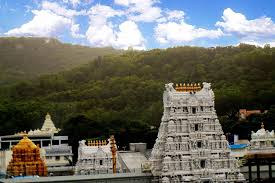
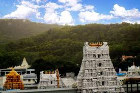
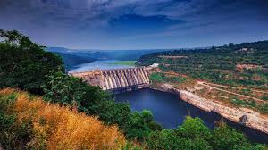
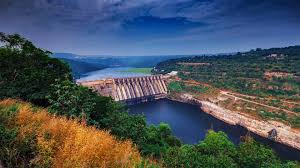

Highlights
- Tirupati: Tirupati is home to the famous Tirumala Venkateswara Temple, one of the most visited pilgrimage sites in the world. The temple is dedicated to Lord Venkateswara and attracts millions of devotees annually.
- Amaravati: The ancient city of Amaravati is significant for its historical and archaeological sites. It was once the capital of the Satavahana dynasty and is known for the Amaravati Stupa, an important Buddhist site
- Visakhapatnam: Visakhapatnam, often called Vizag, is a coastal city known for its beautiful beaches, including Ramakrishna Beach and Rushikonda Beach. The city is also home to the Submarine Museum and the scenic Kailasagiri Hill.
- Hampi: Although Hampi is technically in Karnataka, it is close to the Andhra Pradesh border and heavily influenced the region's history. This UNESCO World Heritage Site features stunning ancient ruins, temples, and boulders, reflecting the grandeur of the Vijayanagara Empire.
- Pochampally: Known as the "Silk City," Pochampally is famous for its handwoven Ikat textiles. Visitors can explore the weaving process and shop for beautiful, traditional fabrics and garments.
- Araku Valley: Araku Valley is a picturesque hill station known for its lush green landscapes, coffee plantations, and tribal culture. The scenic beauty and pleasant climate make it an ideal getaway for nature lovers.
- Nagarjuna Sagar Dam: his impressive dam on the Krishna River is one of the largest in India and is known for its engineering marvels. The area is also home to the Nagarjuna Konda, an island museum showcasing ancient Buddhist relics and artifacts.
 



 

Araku Valley and Borra Caves
Day 1: Arrival in Visakhapatnam
- Morning: Arrive in Visakhapatnam (Vizag) and check into your hotel.
- Afternoon: Visit Ramakrishna Beach and enjoy the coastal views. Relax and have lunch at a beachside café.
- Evening: Explore Borra Caves (approximately 1.5 hours from Vizag) if time allows, or plan to visit the next day. Return to Vizag and have dinner at a local restaurant.
Day 2: Borra Caves and Journey to Araku Valley
- Morning: After breakfast, check out from your hotel and visit the Borra Caves. Explore the unique limestone formations and the fascinating stalactites and stalagmites.
- Afternoon: Head towards Araku Valley (approximately 2 hours from Borra Caves). Enjoy the scenic drive through the lush greenery and hills.
- Evening: Arrive in Araku Valley and check into your hotel. Relax and enjoy dinner at the hotel or a local restaurant.
Day 3: Explore Araku Valley
- Morning: After breakfast, visit the Araku Coffee Plantations. Take a guided tour to learn about coffee production and enjoy tasting fresh coffee.
- Afternoon: Visit the Tribal Museum to learn about the local tribal culture and heritage. You can also enjoy a scenic trek or nature walk in the nearby hills.
- Evening: Head to Chandragiri Gardens or enjoy a view from Dumbriguda Waterfall. Return to your hotel for dinner.
Day 4: Visit Ananthagiri Hills
- Morning: After breakfast, take a day trip to Ananthagiri Hills (approximately 30 km from Araku). Enjoy the stunning landscapes and explore the lush green surroundings.
- Afternoon: Engage in activities like trekking or visit local waterfalls in the area. Have lunch at a local eatery or picnic amidst nature.
- Evening: Return to Araku Valley. Enjoy a relaxed evening at your hotel, possibly with a traditional tribal dance performance if available.
Day 5: Departure
- Morning: Enjoy breakfast at your hotel. If time permits, visit any remaining attractions in Araku or enjoy a leisurely morning walk.
- Afternoon: Check out from your hotel and begin your journey back to Visakhapatnam. Depending on your departure schedule, you can explore any last-minute sites in Vizag.
- Evening: Depart from Visakhapatnam